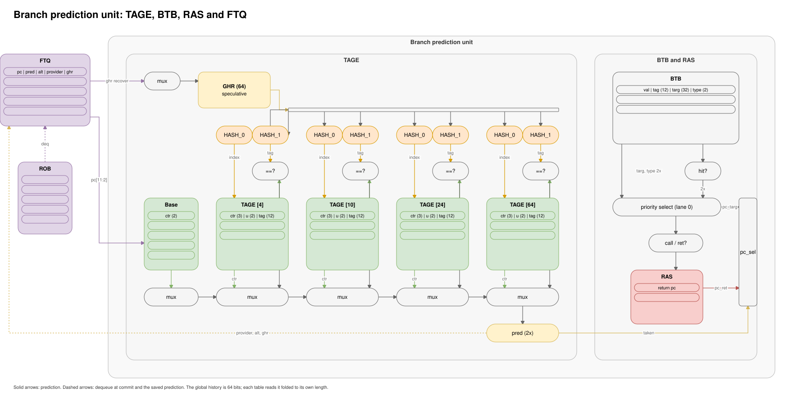

Stage 0: Branch Prediction¶
The predictor, SONAR, chooses the next fetch address every cycle. It has four parts:
the BTB (branch target buffer) records where a control transfer went,
TAGE predicts conditional branch direction,
the RAS (return address stack) predicts return targets,
the FTQ (fetch target queue) holds what execute and commit need to check each prediction and undo wrong ones.


Everything downstream stays speculative until commit. The RTL is in rtl/cpu/0-branch/; sizes and packet types are in rtl/cpu/common/branch_pkg.sv.
Two Speeds¶
The BTB and TAGE sit in block RAM with a one-cycle read, while the next I-cache address must leave in the current cycle. SONAR therefore runs two predictors.
cycle n pc ──┬──> L0 BTB (LUT RAM) ─> immediate redirect target
└──> BTB + TAGE + RAS (SRAM) ─┐
cycle n+1 └──> L1 verdict
agrees? keep going
differs? hold + repair
Design Decision: Two-Speed Prediction vs a Single-Cycle Predictor¶
The L0 is a 512-entry LUT RAM table that answers in the same cycle, so a learned taken branch costs no bubbles. The L1 (BTB, TAGE, RAS) arrives one cycle later with the I-cache response. If the two disagree, or the L0 had no entry and the L1 predicts taken, the packet holds for one cycle and fetch repairs. An L0 miss or disagreement costs one bubble.
The L1 Verdict¶
A 4-entry metadata FIFO runs beside the I-cache requests. A request reserves a slot with its PC, the slot fills one cycle later with the L0, BTB and TAGE results, and the I-cache response consumes it from the head. The FIFO also records the address fetch requested next, because the L0 can retrain while a request stalls.
The L1 checks every response. It skips the repair only when the L0 and L1 agree and the next requested address equals the predicted target. A packet containing a control transfer whose next address is still unknown repairs, as does a not-taken packet that went to an unexpected address. The first rule came from the one verification finding that changed the design (verification).
With no BTB entry, fetch computes a target from the instruction. A JAL, or a conditional branch that TAGE predicts taken, then predicts taken to that target and fills the record as a BTB hit would. A BTB hit takes priority over the computed target.
L0 BTB¶
Each entry covers one 8-byte fetch group, indexed by pc[11:3], and holds a slot bit, a 20-bit tag, the target and a 2-bit strength counter:
taken + miss -> install, strength = 2
taken + hit -> strength++ (saturate at 3)
not-taken + hit -> strength == 3 ? demote to 2 : evict
return -> trains like a taken jump (L1 checks it against the RAS)
A saturated entry survives one not-taken outcome, so a loop exit leaves the entry in place for the next pass. A return keeps its last target and the L1 checks it against the RAS, so a new caller costs one repair.
All fields except the valid bits share one LUT RAM word with one write port and two asynchronous reads: one for lookup, one for the training read-modify-write. The valid bits are flops, so reset clears the table in one cycle.
BTB¶
512 entries in 256 sets of 2 ways. The low index bit splits sets across two block RAM banks, so both words of a fetch group read in one cycle. The index is pc[9:2] ^ pc[17:10], which keeps adjacent words in opposite banks. Two ways prevent two hot branches in one set from evicting each other on every visit.
Type |
Meaning |
Predictor action |
|---|---|---|
|
BEQ, BNE and the rest |
ask TAGE |
|
JAL, JALR |
always taken |
|
call |
always taken, push the RAS |
|
return |
always taken, pop the RAS |
On a miss the BTB selects the way for a new entry (an empty way first, else a free-running bit). That choice travels in the FTQ, so training never rereads the table. Only taken branches install, at commit, one per cycle.
TAGE¶
A 64-bit global history of branch directions handles branches that correlate with earlier branches. TAGE has a 512-entry bimodal base table and four tagged tables of 1,024 entries with history lengths of 4, 10, 24 and 64 bits. The longest-history table with a matching entry provides the prediction.
A tagged entry holds a 3-bit direction counter, a 2-bit useful counter, an 8-bit tag and a valid bit. Index and tag use different hashes of the PC and folded history, so an index collision rarely coincides with a tag collision. The folded histories are registers updated incrementally, which keeps a wide XOR tree off the RAM address path.
The provider is the longest hit, and the alternate is the next longest. History shifts speculatively at fetch for conditional branches only, and each FTQ entry stores a copy for exact restoration after a mispredict.
When the provider and alternate disagree, the useful counter increments if the provider was correct and decrements otherwise. An entry with a zero useful counter can be replaced, and a background sweep clears useful bits so stale entries age out. A new entry with a weak counter defers to the alternate.
Training happens at commit from the FTQ entry: update the base table, update the provider, and on a provider mispredict allocate in the first longer-history table with a free entry. The allocation table is chosen at prediction time and stored in the FTQ. With no free entry, the useful counters above the provider decrement.
Design Decision: TAGE Size vs History Length¶
A CoreMark sweep over table count, size and history length set this configuration. Longer history gave the largest gain by fixing loop exits whose bodies contain other branches. A 128-bit history with 512-entry tables performed about as well but doubled the history checkpoint in each FTQ entry, which sat on a critical path. Loop branches that TAGE still misses are too rare to justify a loop predictor.
The TAGE and BTB tables are block RAM without reset. A sweep writes zeros to every address after reset, and lookups miss until it finishes.
RAS¶
A call pushes pc+4 and a return pops. The stack has 16 circular entries, and each FTQ entry saves the stack pointer for restoration after a mispredict. A wrong-path call can overwrite an entry that a wrong-path return just popped; restoring the pointer leaves that entry overwritten, and the return that later reads it mispredicts once and recovers at execute. Saving the top entry in every FTQ entry would cost more than these rare mispredicts.
Design Decision: Cached Top Entries vs a Full Stack Mux¶
The top two entries are cached in flops, which keeps a 16-way stack mux off the fetch request path. A speculative push or pop appears immediately through a virtual pointer, and the array write lands one cycle later.
FTQ¶
Design Decision: Separate FTQ vs Metadata in the ROB¶
Execute checks and commit training need the predictor’s state at prediction time: PC, prediction, TAGE provider, history and RAS pointer, over 100 bits in total. Only control instructions need it, so they get a 16-entry queue of their own.
Allocate: each fetch packet enqueues one entry per control instruction, up to two per cycle, including branches without a BTB entry. The
ftq_idfollows the instruction.Execute: the two ALUs look up their entry and compare the outcome. A mismatch redirects the front end, and the back end flushes when that branch retires (core).
Commit: the oldest entry dequeues, trains the BTB, TAGE and L0, and checks the outcome once more as a backstop.
Design Decision: Banked FTQ Payload¶
The payload splits into two banks by slot parity, so the two writes per cycle land in different banks with one writer each. A single array put a 2,000-flop mux on the recovery path.
Recovery Priority¶
Priority |
Source |
|---|---|
1 |
architectural redirect (trap, |
2 |
commit backstop |
3 |
execute mispredict |
4 |
L1 prediction repair |
All four are registered. Training happens only at commit, because execute may be on the wrong path. A branch with no BTB entry and no computed target, such as a first-time JALR, counts as not taken even when TAGE predicts taken: fetch had no target and fell through, and the checks follow what fetch did.
Limits¶
No indirect target predictor beyond the BTB, so a call through a pointer mispredicts when its target changes.
A RAS entry overwritten on the wrong path stays overwritten.
The L0 is direct mapped, so large code footprints conflict.
Predictor state resets at power-up.